![]()
library(lme4)
library(ggplot2)
library(dplyr)
library(tidyr)
library(glmmTMB)
dat <- sleepstudy
# ?sleepstudyIntroduzione ai Linear Mixed-Effects Models
Setup
Dataset ed esplorazione
Cominciamo direttamente con un esempio basato sul dataset sleepstudy del pacchetto lme41.
Il dataset riguarda l’impatto della deprivazione da sonno sui tempi di reazione di un gruppo di soggetti.
The average reaction time per day (in milliseconds) for subjects in a sleep deprivation study. Days 0-1 were adaptation and training (T1/T2), day 2 was baseline (B); sleep deprivation started after day 2.
Partiamo esplorando il dataset:
head(dat) Reaction Days Subject
1 250 0 308
2 259 1 308
3 251 2 308
4 321 3 308
5 357 4 308
6 415 5 308
tail(dat) Reaction Days Subject
175 287 4 372
176 330 5 372
177 334 6 372
178 343 7 372
179 369 8 372
180 364 9 372
Vediamo che Reaction è il tempo di reazione in millisecondi, Days sono i giorni di deprivazione e Subject è un codice univoco per ogni partecipante.
Vediamo la distribuzione marginale dei tempi di risposta:
hist(dat$Reaction, breaks = 20)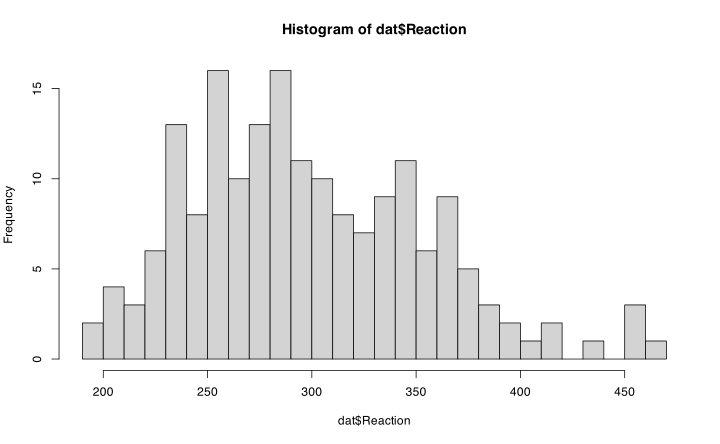
Vediamo il numero di osservazioni per ciascun giorno di deprivazione. Per ogni giorno di deprivazione (da 0 a 9) abbiamo 18 soggetti.
table(dat$Days)
0 1 2 3 4 5 6 7 8 9
18 18 18 18 18 18 18 18 18 18
table(dat$Subject)
308 309 310 330 331 332 333 334 335 337 349 350 351 352 369 370 371 372
10 10 10 10 10 10 10 10 10 10 10 10 10 10 10 10 10 10
table(soggetti = dat$Subject, giorni = dat$Days) giorni
soggetti 0 1 2 3 4 5 6 7 8 9
308 1 1 1 1 1 1 1 1 1 1
309 1 1 1 1 1 1 1 1 1 1
310 1 1 1 1 1 1 1 1 1 1
330 1 1 1 1 1 1 1 1 1 1
331 1 1 1 1 1 1 1 1 1 1
332 1 1 1 1 1 1 1 1 1 1
333 1 1 1 1 1 1 1 1 1 1
334 1 1 1 1 1 1 1 1 1 1
335 1 1 1 1 1 1 1 1 1 1
337 1 1 1 1 1 1 1 1 1 1
349 1 1 1 1 1 1 1 1 1 1
350 1 1 1 1 1 1 1 1 1 1
351 1 1 1 1 1 1 1 1 1 1
352 1 1 1 1 1 1 1 1 1 1
369 1 1 1 1 1 1 1 1 1 1
370 1 1 1 1 1 1 1 1 1 1
371 1 1 1 1 1 1 1 1 1 1
372 1 1 1 1 1 1 1 1 1 1
Quindi abbiamo un dataset completo, senza valori mancanti. Tutti i soggetti hanno tutte le osservazioni. Ora vediamo qualche statistica descrittiva del tempo (in ms) in funzione dei giorni di deprivazione.
dat |>
ggplot(aes(x = factor(Days), y = Reaction)) +
geom_boxplot()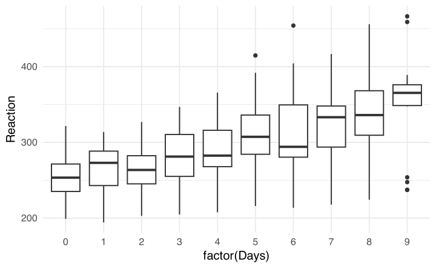
Si vede chiaramente un pattern: al crescere della deprivazione aumentano i tempi di reazione. Ovviamente è presente della variabilità ma la mediana dei tempi di reazione aumenta chiaramente.
Vediamo ora la situazione per ogni soggetto. Ogni linea è il trend di ogni soggetto. Vediamo che, nonostante la variabilità tra soggetti, il pattern è abbastanza comune a tutti: al crescere della deprivazione da sonno, aumentano i tempi di reazione.
dat |>
ggplot(aes(x = Days, y = Reaction)) +
geom_line(aes(group = Subject))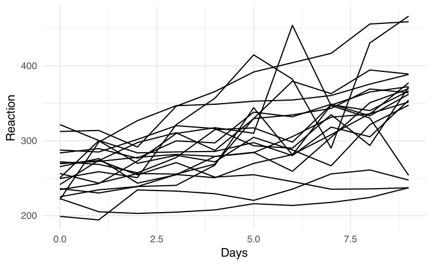
Modello lineare e complete pooling
Ora proviamo a stimare con un modello statistico il trend che osserviamo a occhio: i tempi di reazione aumentano con i giorni di deprivazione. Se lo affrontiamo con gli strumenti che conosciamo finora ovvero i modelli lineari, possiamo implementare un modello di questo tipo:
\[ \text{RT}_{ij} = \beta_0 + \beta_1\text{Days}_{ij} + \varepsilon_{ij} \]
Possiamo anche implementarlo direttamente in R:
fit_lm <- lm(Reaction ~ Days, data = dat)
summary(fit_lm)
Call:
lm(formula = Reaction ~ Days, data = dat)
Residuals:
Min 1Q Median 3Q Max
-110.85 -27.48 1.55 26.14 139.95
Coefficients:
Estimate Std. Error t value Pr(>|t|)
(Intercept) 251.41 6.61 38.03 < 2e-16 ***
Days 10.47 1.24 8.45 9.9e-15 ***
---
Signif. codes: 0 '***' 0.001 '**' 0.01 '*' 0.05 '.' 0.1 ' ' 1
Residual standard error: 47.7 on 178 degrees of freedom
Multiple R-squared: 0.286, Adjusted R-squared: 0.282
F-statistic: 71.5 on 1 and 178 DF, p-value: 9.89e-15
Possiamo interpretare i parametri in modo classico:
- \(\beta_0\): al tempo 0 (Days = 0) il tempo di reazione medio è 251.405 ms
- \(\beta_1\): per ogni giorno che passa di deprivazione, in media il tempo di reazione medio aumenta di 10.467 ms
Questo modello sta cercando di stimare la relazione tra Days e Reaction \(\beta_1\) utilizzando tutte le osservazioni \(i\) del dataset. Notate qualcosa di strano?
In nessuna parte del modello si tiene conto del fatto che le righe del dataset sono raggruppate in base al soggetto. Ogni soggetto ha 10 righe (0-9) che indicano il suo tempo di reazione. Questo comporta che le righe non sono indipendenti, ovvero che le righe associate al soggetto 308 sono (probabilmente) più simili tra loro rispetto alle righe di un altro soggetto.
In termini pratici, se un soggetto parte a tempo 0 con un tempo di reazione alto mentre un altro soggetto parte con un tempo di reazione basso è probabile che anche le osservazioni per gli altri tempi siano in media più alte/basse.
Vediamo un grafico con tutte le osservazioni per ogni soggetto. Il punto rosso rappresenta la media di ogni soggetto.
dat |>
ggplot(aes(x = Subject, y = Reaction)) +
geom_point(size = 2) +
stat_summary(fun = mean, geom = "point", size = 5, col = "red")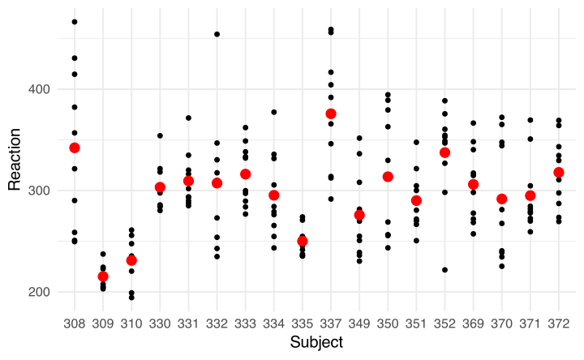
Da questo grafico vediamo che:
- ogni soggetto ha la sua media e le medie dei soggetti sono diverse tra loro
- le osservazioni di un soggetto sono più simili tra loro rispetto a osservazioni di due soggetti diversi
Proviamo ad unire i due grafici precedenti mostrando sia le differenze di media sia le differenze nell’effetto dei giorni di deprivazione:
plot(Reaction ~ Days, data = dat, type = "b")
points(dat$Days[dat$Days == 0], dat$Reaction[dat$Days == 0], col = "red", pch = 19, cex = 2)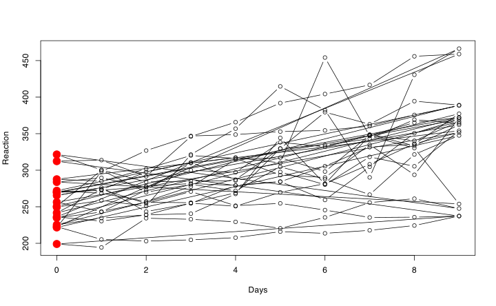
Dal grafico si vede che ogni soggetto ha il suo punto di partenza. Inoltre ogni soggetto ha il suo trend che varia in modo importante.
Il modello che abbiamo scritto prima ignora completamente il fatto che le misurazioni siano raggruppate (nested) nel soggetto. Ignora anche che ogni soggetto sembra avere, oltre alla sua baseline, anche la sua pendenza/slope rispetto all’effetto dei giorni.
dat |>
ggplot(aes(x = Days, y = Reaction)) +
geom_point(size = 3) +
geom_line(aes(group = Subject)) +
geom_smooth(method = "lm", se = FALSE, lwd = 2)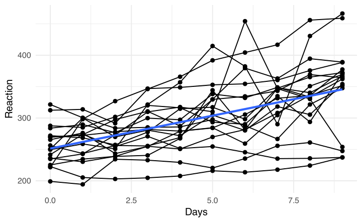
Proviamo, invece di fare un modello complessivo, a fare un modello per ogni soggetto. Quindi facciamo con lm lo stesso modello ma individualmente per ogni soggetto. Possiamo usare la funzione lme4::lmList(). Questi sono i parametri stimati, \(\beta_0\) e \(\beta_1\) per ogni soggetto. Confrontiamoli con quelli che abbiamo stimato dal modello completo:
fitl <- lmList(Reaction ~ Days | Subject, data = dat)
# aggiungiamo quello completo
fitl <- c(fitl, "full" = list(fit_lm))
fitl <- do.call(rbind, lapply(fitl, coef))
fitl (Intercept) Days
308 244 21.76
309 205 2.26
310 203 6.11
330 290 3.01
331 286 5.27
332 264 9.57
333 275 9.14
334 240 12.25
335 263 -2.88
337 290 19.03
349 215 13.49
350 226 19.50
351 261 6.43
352 276 13.57
369 255 11.35
370 210 18.06
371 254 9.19
372 267 11.30
full 251 10.47
Chiaramente c’è una differenza importante, che possiamo visualizzare anche graficamente. La retta rossa è il modello completo (uguale per tutti), quella blu è il modello per soggetto. Per molti soggetti il modello complessivo è una buona approssimazione dell’effetto individuale, per altri meno.
dat |>
ggplot(aes(x = Days, y = Reaction)) +
geom_point() +
geom_line(aes(group = Subject)) +
facet_wrap(~Subject) +
geom_abline(intercept = coef(fit_lm)[1], slope = coef(fit_lm)[2], lwd = 1, col = "red") +
geom_smooth(method = "lm", se = FALSE)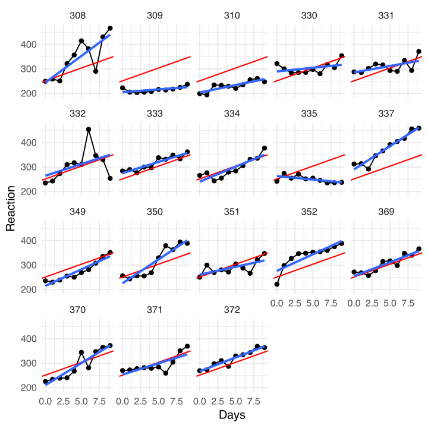
Questi due approcci che abbiamo usato hanno un nome specifico e si chiamano:
- complete pooling: modello che ignora il fatto che ci sono soggetti diversi con osservazioni nested. Stima una relazione unica ignorando la correlazione tra osservazioni dello stesso soggetto.
- no pooling: modello(i) che ignorano in un certo senso il trend medio e preferiscono avere un parametro, o meglio due: \(\beta_0\) e \(\beta_1\)) per ogni soggetto.
Possiamo trovare pregi e difetti di entrambi. Proviamo ad elencarne alcuni:
- il complete pooling non tiene conto del cluster/soggetto. Vedremo dopo meglio le conseguenze ma sta ignorando una componente fondamentale della struttura dati. Il “vantaggio” è che a prescindere dal numero di soggetti e osservazioni, il numero di parametri stimati è sempre minimo. In questo caso solo 3, \(\beta_0\), \(\beta_1\) e \(\sigma^2_{\varepsilon}\).
- il no pooling: tiene, forse troppo, conto del fatto che ci sono cluster/soggetti tanto che decide di stimare un intero modello per ognuno. Il vantaggio è che teniamo conto delle differenze che abbiamo visto anche a occhio, lo svantaggio è che il numero di parametri cresce tantissimo all’aumentare del numero di cluster/soggetti e alla complessità del modello.
Potete immaginare che un approccio sensato stia nel mezzo, ma prima di vedere più formalmente come implementarlo, facciamo un passo indietro riguardo il complete pooling ed il fatto di ignorare i cluster.
Se è chiaro che stimare un parametro per soggetto sia una scelta problematica, il problema di ignorare i soggetti/cluster è meno chiaro. La questione si esprime bene in termini di informazione.
Immaginate di misurare i tempi di reazione di un soggetto, 9 volte oppure di misurare i tempi di reazione in 9 soggetti diversi una volta. È chiaro che:
Immaginate due situazioni: misuriamo i tempi di reazione di uno stesso soggetto 9 volte oppure misuriamo i tempi di reazione di 9 soggetti diversi una sola volta ciascuno. In entrambi i casi abbiamo 9 osservazioni, ma non abbiamo la stessa quantità di informazione indipendente.
Nel primo caso, le osservazioni sono parzialmente ridondanti: se un soggetto è mediamente molto veloce, è probabile che tutte le sue misurazioni tendano a essere più veloci. Le 9 osservazioni ci informano molto bene su quel soggetto, ma meno sulla variabilità generale tra soggetti.
Nel secondo caso, invece, ogni osservazione proviene da un soggetto diverso. Le osservazioni sono quindi meno dipendenti tra loro e portano più informazione sulla popolazione di soggetti da cui sono state estratte.
Il problema nasce quando trattiamo le 9 misurazioni dello stesso soggetto come se fossero equivalenti a 9 soggetti diversi. In quel caso sovrastimiamo la quantità di informazione indipendente contenuta nei dati.
Ora riprendiamo il grafico precedente:
Ora, se le medie dei soggetti sono diverse tra loro automaticamente le osservazioni saranno più correlate. Avere una baseline diversa comporta che le osservazioni del soggetto 308 tenderanno ad essere maggiori (e più simili tra loro) di quelle del soggetto 309.
Quindi, la variabilità tra le medie dei soggetti (cluster) è un indice di quanto sono correlati. In modo grezzo e non formalmente corretto proviamo a calcolare un indice chiamiamolo \(\rho\). Dove \(\sigma^2_{\text{id}}\) è la variabilità dovuta ai soggetti e \(\sigma^2_{y}\) è la variabilità totale.
\[ \frac{\sigma^2_{\text{id}}}{\sigma^2_{y}} \]
sigma2y <- var(dat$Reaction)
sigma2id <- var(tapply(dat$Reaction, dat$Subject, mean))
sigma2id / sigma2y[1] 0.465
Quindi circa il 47% della variabilità totale è dovuta al raggruppamento delle osservazioni per soggetto. Dopo lo vedremo più formalmente ma questo indice si chiama intraclass correlation (ICC) e rappresenta appunto una stima della correlazione tra osservazioni nello stesso cluster. Prima di passare al modello più formale vediamo l’impatto dell’ICC:
\[ n_{\text{eff}} = \frac{km}{1 + (m - 1) \rho} \]
Dove \(m\) è il numero totale di osservazioni (medio) in ogni cluster e \(k\) è il numero di cluster. Quindi \(n = km\) è il numero totale di osservazioni nel dataset e \(\rho\) è l’ICC che abbiamo calcolato prima2. Questa formula calcola quello che si chiama effective sample size cioè il numero di osservazioni effettive una volta che teniamo conto della correlazione.
Calcoliamolo nel nostro caso e poi vediamo alcuni scenari:
neff <- function(k, m, r) (k*m)/(1 + (m-1)*r)
k <- length(unique(dat$Subject))
m <- mean(tapply(dat$Reaction, dat$Subject, length))
r <- sigma2id / sigma2y
# osservazioni totali
k * m [1] 180
# osservazioni effettive
neff(k, m, r)[1] 34.7
Quindi abbiamo un numero effettivo di osservazioni di circa 35 a fronte di un totale di 180 che è una riduzione importante. Questo è il motivo principale per cui usare un modello lineare che ignora la clusterizzazione delle osservazioni può essere estremamente problematico. Vediamo qualche scenario:
ggplot() +
stat_function(fun = function(x) neff(k, m, x)) +
xlab("ICC") +
ylab("Effective Sample Size")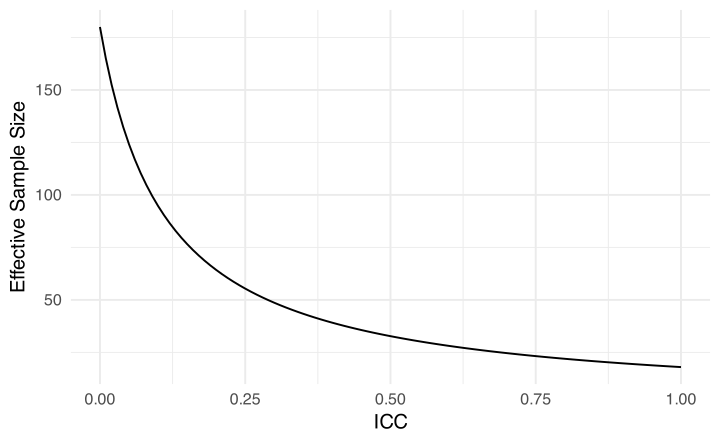
Come vedete, quando ICC = 0 non abbiamo perdita di informazione. Questo è quello che il modello lineare semplice assume normalmente. Quando, nel caso estremo, ICC = 1 allora il numero di osservazioni effettive corrisponde al numero di cluster. In altri termini tutte le osservazioni all’interno dello stesso cluster sono esattamente identiche e quindi \(m\) osservazioni valgono come una sola osservazione indipendente.
# funzione per simulare dati con un certo icc
simICC <- function(k, m, icc){
obs <- rep(1:k, each = m)
ym <- rnorm(k, 0, sqrt(icc))
y <- ym[obs] + rnorm(k*m, 0, sqrt(1 - icc))
data.frame(id = obs, y = y, icc = icc)
}
icc <- c(0, 0.5, 0.8)
lapply(icc, function(x) simICC(10, 50, x)) |>
do.call(rbind, args = _) |>
ggplot(aes(x = id, y = y)) +
facet_wrap(~icc) +
geom_point() +
stat_summary(fun = mean, col = "red", geom = "point", size = 4) +
xlab("Soggetti") +
ylab("Y")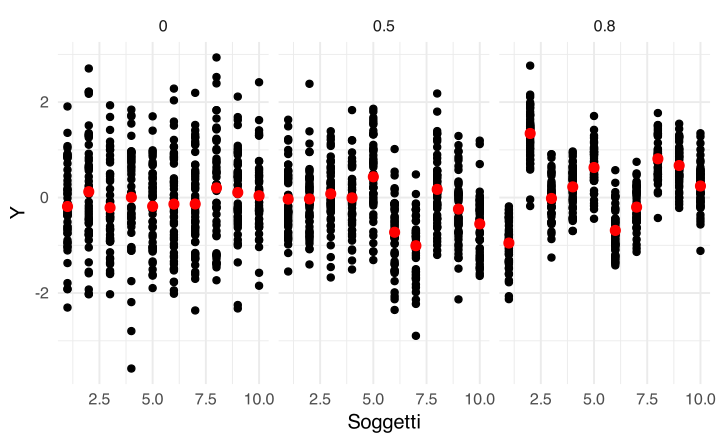
Come vedete in questi dati simulati, all’aumentare dell’ICC aumenta la variabilità tra le medie dei cluster/soggetti e inoltre la variabilità dentro i cluster diminuisce perché le osservazioni tendono a diventare più simili tra loro.
In termini pratici, il problema più importante di ignorare il clustering delle osservazioni è legato alla sovrastima (fittizia) della precisione (quindi sottostima dell’errore standard) del modello lineare classico. Immaginiamo che il modello stia stimando una semplice media il cui errore standard è:
\[ \text{SE}_{\bar y} = \frac{\hat \sigma^2_y}{\sqrt{n}} \quad n = km \]
Quindi proviamo a fare una simulazione con i nostri dati stimando i tempi di reazione medi del nostro dataset.
# media generale
(ybar <- mean(dat$Reaction))[1] 299
n <- nrow(dat)
# errore standard come lo stimerebbe il modello lm()
sd(dat$Reaction) / sqrt(n)[1] 4.2
# errore standard tenendo conto di ICC
n_eff <- neff(k, m, r)
sd(dat$Reaction) / sqrt(n_eff)[1] 9.56
L’errore standard è drasticamente più grande perché teniamo conto dell’informazione effettiva al netto della correlazione (ICC). Questo vale per qualsiasi parametro in un modello dove ignoriamo la presenza dei cluster (e ovviamente ICC > 0).
Dal complete pooling al partial pooling
Vediamo ora più formalmente come espandere il modello lineare che conosciamo. L’idea di base che dobbiamo incorporare è quella del clustering. Il nostro modello ne deve tenere conto, quindi dimentichiamoci l’idea del complete-pooling. Se volessimo introdurre l’idea del no-pooling che tiene conto (all’estremo) del clustering dobbiamo stimare un parametro per soggetto:
fit_pool <- lm(Reaction ~ 1, data = dat)
fit_no_pool <- lm(Reaction ~ 0 + Subject, data = dat)
summary(fit_pool)
Call:
lm(formula = Reaction ~ 1, data = dat)
Residuals:
Min 1Q Median 3Q Max
-104.18 -43.13 -9.86 38.24 167.85
Coefficients:
Estimate Std. Error t value Pr(>|t|)
(Intercept) 298.5 4.2 71.1 <2e-16 ***
---
Signif. codes: 0 '***' 0.001 '**' 0.01 '*' 0.05 '.' 0.1 ' ' 1
Residual standard error: 56.3 on 179 degrees of freedom
summary(fit_no_pool)
Call:
lm(formula = Reaction ~ 0 + Subject, data = dat)
Residuals:
Min 1Q Median 3Q Max
-115.74 -24.60 -3.72 23.00 146.86
Coefficients:
Estimate Std. Error t value Pr(>|t|)
Subject308 342 14 24.4 <2e-16 ***
Subject309 215 14 15.4 <2e-16 ***
Subject310 231 14 16.5 <2e-16 ***
Subject330 303 14 21.7 <2e-16 ***
Subject331 309 14 22.1 <2e-16 ***
Subject332 307 14 22.0 <2e-16 ***
Subject333 316 14 22.6 <2e-16 ***
Subject334 295 14 21.1 <2e-16 ***
Subject335 250 14 17.9 <2e-16 ***
Subject337 376 14 26.8 <2e-16 ***
Subject349 276 14 19.7 <2e-16 ***
Subject350 314 14 22.4 <2e-16 ***
Subject351 290 14 20.7 <2e-16 ***
Subject352 337 14 24.1 <2e-16 ***
Subject369 306 14 21.9 <2e-16 ***
Subject370 292 14 20.8 <2e-16 ***
Subject371 295 14 21.1 <2e-16 ***
Subject372 318 14 22.7 <2e-16 ***
---
Signif. codes: 0 '***' 0.001 '**' 0.01 '*' 0.05 '.' 0.1 ' ' 1
Residual standard error: 44.3 on 162 degrees of freedom
Multiple R-squared: 0.981, Adjusted R-squared: 0.979
F-statistic: 462 on 18 and 162 DF, p-value: <2e-16
Per incorporare il cluster abbiamo capito che il parametro critico è l’ICC o comunque la variabilità tra le medie dei cluster. Quindi possiamo parametrizzare il modello in modo che ci sia una media generale (come nel complete-pooling) ma che sia chiaro come ogni cluster/soggetto si collochi rispetto alla media generale.
Code
dat |>
# media generale
mutate(gm = mean(Reaction)) |>
group_by(Subject) |>
# media di ogni soggetto
mutate(cm = mean(Reaction)) |>
ungroup() |>
ggplot(aes(x = Subject, y = Reaction)) +
geom_hline(yintercept = mean(dat$Reaction)) +
geom_segment(aes(x = Subject, xend = Subject, y = Reaction, yend = cm),col = "darkgreen", position = position_jitter(width = 0.3, seed = 2026)) +
geom_point(size = 2, alpha = 0.2, position = position_jitter(width = 0.3, seed = 2026)) +
stat_summary(fun = mean, geom = "point", size = 5, col = "red") +
geom_segment(aes(x = Subject, xend = Subject, y = gm, yend = cm), col = "dodgerblue", lwd = 1)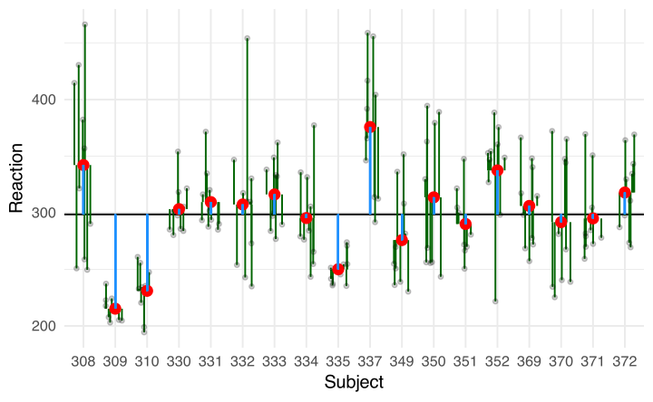
In questo grafico vediamo che ogni osservazione può essere scomposta nella sua deviazione rispetto alla media del cluster che a sua volta devia rispetto alla media generale. Quindi, il tempo di reazione del soggetto \(i\) nell’osservazione/giorno \(j\) è:
\[ \text{RT}_{ij} = \overline{\text{RT}} + \textcolor{blue}{u_{0i}} + \textcolor{green}{\varepsilon_{ij}} \]
Dove quindi la media di ogni soggetto è \(\textcolor{red}{\overline{\text{RT}}_i} = \overline{\text{RT}} + \textcolor{blue}{u_{0i}}\). In questo modo, il parametro critico diventa \(\text{Var}(u_{0i})\) ovvero la variabilità tra le medie dei cluster. Se \(\text{Var}(u_{0i}) \approx 0\) allora tutte le osservazioni deviano solo rispetto alla media generale \(\overline{\text{RT}}\) (e siamo nel complete-pooling). \(\text{Var}(\varepsilon_{ij})\) rimane sempre, come nel modello lineare, la varianza dei residui.
Il segreto del modello ad effetti misti è quello di fare un partial-pooling ovvero non stimare un parametro per soggetto/cluster ma stimare \(\text{Var}(u_{0i})\) ovvero la variabilità dei cluster attorno alla media generale. Questo permette di tenere conto dei cluster ma di evitare di stimare un parametro per ogni soggetto.
In termini di modello possiamo scrivere più formalmente:
\[ \text{RT}_{ij} = \mu_0 + u_{0i} + \varepsilon_{ij} \]
\[ u_{0i} \sim \mathcal{N}(0, \sigma^2_{u0}) \]
\[ \varepsilon_{ij} \sim \mathcal{N}(0, \sigma^2_{\varepsilon}) \]
L’assunzione principale (oltre a quelle che già facciamo con il modello lineare classico) è che le deviazioni dei soggetti/cluster rispetto alla media generale siano distribuite normalmente. Ora vediamo direttamente come implementarlo in R con il pacchetto lme4. La funzione principale è lme4::lmer():
library(lme4)
fit <- lmer(Reaction ~ 1 + (1|Subject), data = dat)
fitLinear mixed model fit by REML ['lmerMod']
Formula: Reaction ~ 1 + (1 | Subject)
Data: dat
REML criterion at convergence: 1904
Random effects:
Groups Name Std.Dev.
Subject (Intercept) 35.8
Residual 44.3
Number of obs: 180, groups: Subject, 18
Fixed Effects:
(Intercept)
299
La sintassi è relativamente semplice e divisa in due parti:
- parte fissa:
Reaction ~ 1che identifica la componente sistematica del modello ovvero quelli che abbiamo chiamato effetti fissi. Questa parte viene scritta allo stesso modo dilm(). - parte random:
(1|Subject)che descrive il clustering, in questo caso rispetto ai soggetti.
La sintassi per la parte random è leggermente complessa e non molto intuitiva. Sostanzialmente ogni effetto random (ovvero ogni variabile che definisce cluster) ha il suo effetto random. Questo viene aggiunto con + alla parte fissa + (1|Subject). La scrittura è predittore|cluster quindi a sinistra di | si mette un possibile predittore, in questo caso 1| indica che abbiamo solo intercetta, nessun predittore. A destra |cluster si mette la variabile che identifica i cluster.
La variabile cluster deve ovviamente essere nel nostro dataset e deve ripetere lo stesso valore per ogni osservazione associata a quel cluster.
head(dat, n = 20) Reaction Days Subject
1 250 0 308
2 259 1 308
3 251 2 308
4 321 3 308
5 357 4 308
6 415 5 308
7 382 6 308
8 290 7 308
9 431 8 308
10 466 9 308
11 223 0 309
12 205 1 309
13 203 2 309
14 205 3 309
15 208 4 309
16 216 5 309
17 214 6 309
18 218 7 309
19 224 8 309
20 237 9 309
Ora vediamo cosa è stato stimato dal modello:
summary(fit)Linear mixed model fit by REML ['lmerMod']
Formula: Reaction ~ 1 + (1 | Subject)
Data: dat
REML criterion at convergence: 1904
Scaled residuals:
Min 1Q Median 3Q Max
-2.498 -0.550 -0.148 0.512 3.345
Random effects:
Groups Name Variance Std.Dev.
Subject (Intercept) 1278 35.8
Residual 1959 44.3
Number of obs: 180, groups: Subject, 18
Fixed effects:
Estimate Std. Error t value
(Intercept) 298.51 9.05 33
Nel summary del modello vediamo una divisione chiara tra parte fissa e random. La parte fissa è sostanzialmente uguale a quella che otteniamo con lm. Abbiamo il parametro stimato, l’errore standard e la statistica test. Una cosa che non abbiamo sono i p-value. Questo è un punto critico ma di base, con i modelli mixed-effects il calcolo dei gradi di libertà (necessario per i p-value) non è semplice e non c’è un modo univoco.
Il modo più semplice per averli è usare il pacchetto lmerTest che usa un’approssimazione per il calcolo:
library(lmerTest)
# dobbiamo rifittare il modello dopo aver caricato il pacchetto perché lmerTest
# contiene un wrapper della funzione lmer()
fit <- lmer(Reaction ~ 1 + (1|Subject), data = dat)
summary(fit)Linear mixed model fit by REML. t-tests use Satterthwaite's method [
lmerModLmerTest]
Formula: Reaction ~ 1 + (1 | Subject)
Data: dat
REML criterion at convergence: 1904
Scaled residuals:
Min 1Q Median 3Q Max
-2.498 -0.550 -0.148 0.512 3.345
Random effects:
Groups Name Variance Std.Dev.
Subject (Intercept) 1278 35.8
Residual 1959 44.3
Number of obs: 180, groups: Subject, 18
Fixed effects:
Estimate Std. Error df t value Pr(>|t|)
(Intercept) 298.51 9.05 17.00 33 <2e-16 ***
---
Signif. codes: 0 '***' 0.001 '**' 0.01 '*' 0.05 '.' 0.1 ' ' 1
La parte più interessante è però quella random:
Random effects:
Groups Name Variance Std.Dev.
Subject (Intercept) 1278 35.8
Residual 1959 44.3
Number of obs: 180, groups: Subject, 18La parte residual è quella che avremmo ottenuto anche dal modello con lm e rappresenta \(\sigma^2_{\varepsilon}\) ovvero la variabilità dei residui. Invece la parte Subject è la stima di \(\sigma^2_{u0}\) ovvero della variabilità dei soggetti attorno alla media generale.
Questo modello è detto random-intercept model perché consente ad ogni cluster/soggetto di avere la sua media ed è espressa come deviazione rispetto alla media generale (Intercept).
Possiamo anche calcolare l’ICC in modo più accurato ovvero usando le componenti di varianza calcolate dal modello.
\[ \mbox{ICC} = \frac{\sigma^2_{u0}}{\sigma^2_{u0} + \sigma^2_{\varepsilon}} \]
Ovvero la varianza delle intercette di ogni cluster/soggetto sulla variabilità totale. Possiamo usare il pacchetto performance ed il pacchetto insight per estrarre informazioni utili da questi modelli.
# la funzione get_variance estrae tutte le componenti di varianza dal modello
(v <- insight::get_variance(fit))$var.fixed
[1] 0
$var.random
[1] 1278
$var.residual
[1] 1959
$var.distribution
[1] 1959
$var.dispersion
[1] 0
$var.intercept
Subject
1278
v$var.intercept / (v$var.intercept + v$var.residual)Subject
0.395
# oppure direttamente con la funzione performance::icc()
performance::icc(fit)# Intraclass Correlation Coefficient
Adjusted ICC: 0.395
Unadjusted ICC: 0.395
Questa è la stima più accurata di quello che avevamo calcolato a mano in precendenza. Questo significa che il 40% della variabilità totale è spiegata/dovuta al clustering delle osservazioni entro i soggetti. Vediamo la differenza con il modello con lm():
fit_lm <- lm(Reaction ~ 1, data = dat)
summary(fit_lm)
Call:
lm(formula = Reaction ~ 1, data = dat)
Residuals:
Min 1Q Median 3Q Max
-104.18 -43.13 -9.86 38.24 167.85
Coefficients:
Estimate Std. Error t value Pr(>|t|)
(Intercept) 298.5 4.2 71.1 <2e-16 ***
---
Signif. codes: 0 '***' 0.001 '**' 0.01 '*' 0.05 '.' 0.1 ' ' 1
Residual standard error: 56.3 on 179 degrees of freedom
summary(fit)Linear mixed model fit by REML. t-tests use Satterthwaite's method [
lmerModLmerTest]
Formula: Reaction ~ 1 + (1 | Subject)
Data: dat
REML criterion at convergence: 1904
Scaled residuals:
Min 1Q Median 3Q Max
-2.498 -0.550 -0.148 0.512 3.345
Random effects:
Groups Name Variance Std.Dev.
Subject (Intercept) 1278 35.8
Residual 1959 44.3
Number of obs: 180, groups: Subject, 18
Fixed effects:
Estimate Std. Error df t value Pr(>|t|)
(Intercept) 298.51 9.05 17.00 33 <2e-16 ***
---
Signif. codes: 0 '***' 0.001 '**' 0.01 '*' 0.05 '.' 0.1 ' ' 1
Come vedete, la stima dell’intercetta generale (quindi i tempi di reazione medi) è praticamente identica tra i due modelli. Quello che è drasticamente diverso è l’errore standard. Se notate, la differenza è simile a quella che avevamo calcolato a mano. Ignorando il clustering, abbiamo una sovrastima della precisione dovuta ad aver violato l’assunzione di indipendenza delle osservazioni.
Stime soggetto-specifiche e shrinkage
Una cosa che possiamo fare ora è stimare il punteggio medio di ogni soggetto che sarà quindi \(\beta_0 + u_{0i}\) ovvero l’intercetta generale più la deviazione soggetto-specifica. Possiamo ottenere queste stime con la funzione ranef():
# queste le stime dei parametri fissi beta_0
(fe <- fixef(fit))(Intercept)
299
# queste sono le stime di u_0i
(re <- ranef(fit))$Subject
(Intercept)
308 37.83
309 -72.21
310 -58.54
330 4.09
331 9.48
332 7.63
333 15.31
334 -2.78
335 -42.00
337 66.95
349 -19.66
350 13.09
351 -7.29
352 33.74
369 6.53
370 -5.90
371 -3.06
372 16.80
with conditional variances for "Subject"
b0 <- fe[1]
u <- re$Subject[, 1]
by_subj <- data.frame(b0 = b0, u = u, yi = b0 + u)
by_subj b0 u yi
1 299 37.83 336
2 299 -72.21 226
3 299 -58.54 240
4 299 4.09 303
5 299 9.48 308
6 299 7.63 306
7 299 15.31 314
8 299 -2.78 296
9 299 -42.00 257
10 299 66.95 365
11 299 -19.66 279
12 299 13.09 312
13 299 -7.29 291
14 299 33.74 332
15 299 6.53 305
16 299 -5.90 293
17 299 -3.06 295
18 299 16.80 315
Un altro modo più diretto per ottenere le stime è usare la funzione coeff() che fornisce direttamente la stima come combinazione lineare di parametri fissi e random.
coef(fit)$Subject
(Intercept)
308 336
309 226
310 240
330 303
331 308
332 306
333 314
334 296
335 257
337 365
349 279
350 312
351 291
352 332
369 305
370 293
371 295
372 315
attr(,"class")
[1] "coef.mer"
Confrontiamo queste stime con quelle ottenute dal modello no-pooling quindi stimando direttamente un parametro per ogni soggetto:
re_comp <- data.frame(no_pool = coef(fit_no_pool), lmer = coef(fit)$Subject[, 1])
re_comp$subject <- gsub("Subject", "", rownames(re_comp))
re_comp no_pool lmer subject
Subject308 342 336 308
Subject309 215 226 309
Subject310 231 240 310
Subject330 303 303 330
Subject331 309 308 331
Subject332 307 306 332
Subject333 316 314 333
Subject334 295 296 334
Subject335 250 257 335
Subject337 376 365 337
Subject349 276 279 349
Subject350 314 312 350
Subject351 290 291 351
Subject352 337 332 352
Subject369 306 305 369
Subject370 292 293 370
Subject371 295 295 371
Subject372 318 315 372
Intanto si vede che le stime non sono identiche ma generalmente molto simili.
re_comp |>
pivot_longer(c(no_pool, lmer)) |>
ggplot(aes(x = subject, y = value, color = name)) +
geom_point() +
geom_hline(yintercept = fixef(fit)[1])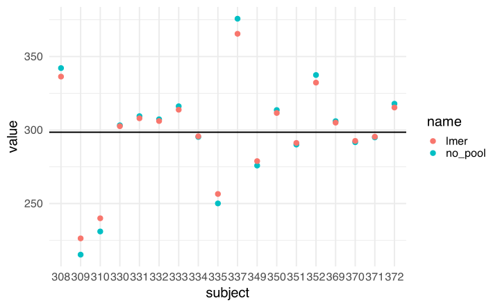
Dal grafico vediamo un concetto molto importante ovvero quello dello shrinkage. Come vedete, le stime fatte dal modello con lmer sono sistematicamente minori. In termini intuitivi è come se fossero più attirate verso il centro (la stima dell’effetto medio, linea nera) rispetto a quelle con il modello lm (un parametro per soggetto).
Vediamo anche che lo shrinkage non è casuale, né necessariamente uguale per tutti i gruppi. Nel caso più semplice di un modello a intercetta variabile,
\[ y_{ij} = \mu + u_{0i} + \varepsilon_{ij} \]
con:
\[ u_j \sim N(0,\tau^2) \]
e
\[ \varepsilon_{ij} \sim N(0,\sigma^2) \]
la stima della media del gruppo \(j\) può essere scritta come:
\[ \hat{\mu}_i = \hat{\mu} + \lambda_i(\bar{y}_i - \hat{\mu}) \]
dove \(\bar{y}_i\) è la media grezza del gruppo \(j\), \(\hat{\mu}\) è la media globale stimata e \(\lambda_i\) è un peso compreso tra 0 e 1:
\[ \lambda_i = \frac{\tau^2}{\tau^2 + \sigma^2/n_i} \]
La stessa espressione può essere riscritta come media pesata tra la media globale e la media osservata del gruppo:
\[ \hat{\mu}_i = (1-\lambda_i)\hat{\mu} + \lambda_i \bar{y}_i \]
Quindi la stima del gruppo non coincide necessariamente con la sua media grezza: è una stima intermedia tra la media globale e la media del gruppo. Il peso \(\lambda_i\) misura quanto il modello si fida dell’informazione specifica del gruppo.
Se \(\lambda_i\) è vicino a 1, la stima del gruppo sarà molto vicina a \(\bar{y}_i\). Se invece \(\lambda_i\) è vicino a 0, la stima del gruppo sarà molto vicina a \(\hat{\mu}\).
Casi limite
Se il gruppo ha molte osservazioni, cioè se \(n_i\) è molto grande, allora:
\[ \frac{\sigma^2}{n_i} \to 0 \]
e quindi:
\[ \lambda_i \to \frac{\tau^2}{\tau^2 + 0} = 1 \]
In questo caso:
\[ \hat{\mu}_i \to \bar{y}_i \]
Il modello si fida molto della media osservata del gruppo e lo shrinkage tende a scomparire.
Al contrario, se il gruppo ha poche osservazioni, il termine \(\sigma^2/n_i\) rimane più grande. Di conseguenza, \(\lambda_i\) diminuisce e la stima del gruppo viene spostata maggiormente verso la media globale.
Anche la varianza tra gruppi è importante. Se \(\tau^2\) è molto piccola, il modello conclude che i gruppi non differiscono molto tra loro:
\[ \lambda_i \to 0 \]
e quindi:
\[ \hat{\mu}_i \to \hat{\mu} \]
Le stime dei gruppi collassano verso la media globale.
Se invece \(\tau^2\) è grande rispetto a \(\sigma^2/n_i\), il modello riconosce molta variabilità reale tra gruppi. In questo caso \(\lambda_i\) è più vicino a 1 e lo shrinkage è più debole.
Interpretazione
Lo shrinkage aumenta quando:
\[ n_i \downarrow \]
cioè quando il gruppo ha poche osservazioni;
\[ \sigma^2 \uparrow \]
cioè quando c’è molta variabilità residua entro gruppo;
\[ \tau^2 \downarrow \]
cioè quando i gruppi sembrano poco diversi tra loro.
Al contrario, lo shrinkage diminuisce quando il gruppo ha molte osservazioni, quando la variabilità residua è bassa e quando il modello riconosce una forte variabilità reale tra gruppi.
È importante distinguere tra shrinkage proporzionale e shrinkage assoluto. Se due gruppi hanno lo stesso numero di osservazioni, lo stesso modello applica la stessa proporzione di shrinkage. Tuttavia, un gruppo più lontano dalla media globale viene spostato di più in termini assoluti, semplicemente perché la sua distanza iniziale è maggiore.
Infatti:
\[ \bar{y}_i - \hat{\mu}_i = (1-\lambda_i)(\bar{y}_i - \hat{\mu}) \]
Per esempio, se \(\lambda_i = .70\), il modello conserva il 70% della deviazione del gruppo dalla media globale e ne riduce il 30%. Se un gruppo dista 10 dalla media globale, lo spostamento sarà 3; se un gruppo dista 100, lo spostamento sarà 30. Il secondo gruppo viene quindi trascinato di più in termini assoluti, ma non in termini proporzionali.
In sintesi, lo shrinkage è una forma di partial pooling: il mixed model non usa solo la media del singolo gruppo, come farebbe una stima completamente separata, ma non ignora nemmeno le differenze tra gruppi, come farebbe un modello completamente aggregato. Produce invece una stima intermedia, tanto più vicina alla media del gruppo quanto più l’informazione su quel gruppo è precisa.
Modello con predittori
Vediamo ora cosa succede aggiungendo il predittore Days nel modello con intercetta random. Partiamo dal modello in R e poi formalizziamo quello che succede:
fit_days <- lmer(Reaction ~ 1 + Days + (1|Subject), data = dat)
summary(fit_days, cor = FALSE)Linear mixed model fit by REML. t-tests use Satterthwaite's method [
lmerModLmerTest]
Formula: Reaction ~ 1 + Days + (1 | Subject)
Data: dat
REML criterion at convergence: 1786
Scaled residuals:
Min 1Q Median 3Q Max
-3.226 -0.553 0.011 0.519 4.251
Random effects:
Groups Name Variance Std.Dev.
Subject (Intercept) 1378 37.1
Residual 960 31.0
Number of obs: 180, groups: Subject, 18
Fixed effects:
Estimate Std. Error df t value Pr(>|t|)
(Intercept) 251.405 9.747 22.810 25.8 <2e-16 ***
Days 10.467 0.804 161.000 13.0 <2e-16 ***
---
Signif. codes: 0 '***' 0.001 '**' 0.01 '*' 0.05 '.' 0.1 ' ' 1
Ora abbiamo l’effetto fisso di Days che interpretiamo allo stesso modo di un modello con lm. Confrontiamolo comunque con la stima che ignora i cluster:
fit_days_lm <- lm(Reaction ~ Days, data = dat)
summary(fit_days_lm)
Call:
lm(formula = Reaction ~ Days, data = dat)
Residuals:
Min 1Q Median 3Q Max
-110.85 -27.48 1.55 26.14 139.95
Coefficients:
Estimate Std. Error t value Pr(>|t|)
(Intercept) 251.41 6.61 38.03 < 2e-16 ***
Days 10.47 1.24 8.45 9.9e-15 ***
---
Signif. codes: 0 '***' 0.001 '**' 0.01 '*' 0.05 '.' 0.1 ' ' 1
Residual standard error: 47.7 on 178 degrees of freedom
Multiple R-squared: 0.286, Adjusted R-squared: 0.282
F-statistic: 71.5 on 1 and 178 DF, p-value: 9.89e-15
# la funzione car::compareCoefs è molto utile per
# confrontare visivamente le stime di modelli diversi
car::compareCoefs(fit_days, fit_days_lm)Calls:
1: lmer(formula = Reaction ~ 1 + Days + (1 | Subject), data = dat)
2: lm(formula = Reaction ~ Days, data = dat)
Model 1 Model 2
(Intercept) 251.41 251.41
SE 9.75 6.61
Days 10.467 10.467
SE 0.804 1.238
Vediamo lo stesso pattern del modello precedente, le stime degli effetti fissi sono praticamente identiche ma gli standard error sono decisamente maggiori nel modello con lmer (come atteso).
Il modello con lm sta stimando un’intercetta comune a tutti e una slope/pendenza comune a tutti. Il modello fit_days invece incorpora il clustering dei soggetti stimando un’intercetta specifica per ogni soggetto. Vediamo graficamente:
# Estraiamo i coefficienti
coefs_lmer <- data.frame(coef(fit_days)$Subject)
names(coefs_lmer) <- c("b0", "b1")
coefs_lmer$b0_lm <- coef(fit_days_lm)[1]
coefs_lmer$b1_lm <- coef(fit_days_lm)[2]
coefs_lmer$Subject <- rownames(coefs_lmer)
head(coefs_lmer) b0 b1 b0_lm b1_lm Subject
308 292 10.5 251 10.5 308
309 174 10.5 251 10.5 309
310 188 10.5 251 10.5 310
330 256 10.5 251 10.5 330
331 262 10.5 251 10.5 331
332 260 10.5 251 10.5 332
# ora espandiamo con i Days
coefs_lmer <- expand_grid(coefs_lmer, Days = 0:9)
head(coefs_lmer)# A tibble: 6 × 6
b0 b1 b0_lm b1_lm Subject Days
<dbl> <dbl> <dbl> <dbl> <chr> <int>
1 292. 10.5 251. 10.5 308 0
2 292. 10.5 251. 10.5 308 1
3 292. 10.5 251. 10.5 308 2
4 292. 10.5 251. 10.5 308 3
5 292. 10.5 251. 10.5 308 4
6 292. 10.5 251. 10.5 308 5
# calcoliamo i valori
coefs_lmer$y_lm <- with(coefs_lmer, b0_lm + b1_lm * Days)
coefs_lmer$y_lmer <- with(coefs_lmer, b0 + b1 * Days)
head(coefs_lmer)# A tibble: 6 × 8
b0 b1 b0_lm b1_lm Subject Days y_lm y_lmer
<dbl> <dbl> <dbl> <dbl> <chr> <int> <dbl> <dbl>
1 292. 10.5 251. 10.5 308 0 251. 292.
2 292. 10.5 251. 10.5 308 1 262. 303.
3 292. 10.5 251. 10.5 308 2 272. 313.
4 292. 10.5 251. 10.5 308 3 283. 324.
5 292. 10.5 251. 10.5 308 4 293. 334.
6 292. 10.5 251. 10.5 308 5 304. 345.
coefs_lmer |>
pivot_longer(c(y_lm, y_lmer)) |>
ggplot(aes(x = Days, y = value, color = Subject)) +
geom_line() +
facet_wrap(~name)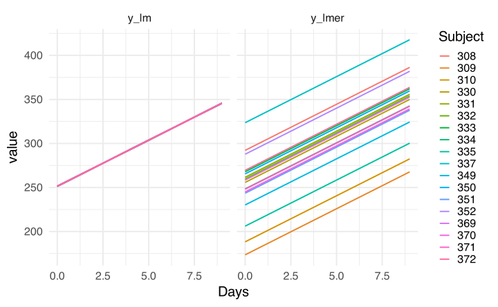
Quello che si vede è che la pendenza rimane la stessa per ogni soggetto in entrambi i modelli. Tuttavia nel modello con lmer ogni soggetto ha la sua intercetta e quindi una parte di variabilità viene catturata dal termine random.
In termini pratici stiamo introducendo nel modello le differenze individuali nel senso che ogni soggetto ha il suo tempo di reazione medio di partenza.
In termini più formali, il nostro modello ora diventa:
\[ y_{ij} = \beta_0 + u_{0i} + \beta_1 \text{Days}_{ij} + \varepsilon_{ij} \]
Tip
Un trucco per leggere le formule dei modelli con effetti random riguarda il guardare i subscript \(i\), \(j\), etc. Se \(i\) sono i soggetti, ogni volta che vediamo \(i\) significa che quel termine varia tra soggetti. Nel nostro caso \(u_{0i}\) significa che ogni soggetto può avere un \(u_{0i}\) diverso ovvero una deviazione rispetto la media generale.
Allo stesso modo \(ij\) significa che quel valore può variare per ogni combinazione di \(i\) (soggetto) e \(j\) giorno di deprivazione.
Al contrario, per ora, \(\beta_1\) non ha nessun subscript quindi il valore è fisso (effetto fisso) per ogni osservazione nel dataset.
Random slope
Se riguardiamo i grafici iniziali però ci accorgiamo che non solo i soggetti hanno il loro tempo di reazione medio ma anche l’impatto della deprivazione è diverso tra soggetti. Per modellare questo aspetto possiamo permettere al modello di mettere il subscript \(i\) anche su \(\beta_1\) e non solo su \(\beta_0\).
Vediamo anche qui prima in R e poi più formalmente. Per aggiungere la random slope per Days dobbiamo includere Days sia nella parte fissa (come ora) che in quella random:
fit_days_slopes <- lmer(Reaction ~ 1 + Days + (1 + Days | Subject), data = dat)
summary(fit_days_slopes, cor = FALSE)Linear mixed model fit by REML. t-tests use Satterthwaite's method [
lmerModLmerTest]
Formula: Reaction ~ 1 + Days + (1 + Days | Subject)
Data: dat
REML criterion at convergence: 1744
Scaled residuals:
Min 1Q Median 3Q Max
-3.954 -0.463 0.023 0.463 5.179
Random effects:
Groups Name Variance Std.Dev. Corr
Subject (Intercept) 612.1 24.74
Days 35.1 5.92 0.07
Residual 654.9 25.59
Number of obs: 180, groups: Subject, 18
Fixed effects:
Estimate Std. Error df t value Pr(>|t|)
(Intercept) 251.41 6.82 17.00 36.84 < 2e-16 ***
Days 10.47 1.55 17.00 6.77 3.3e-06 ***
---
Signif. codes: 0 '***' 0.001 '**' 0.01 '*' 0.05 '.' 0.1 ' ' 1
Vediamo che la parte fissa è rimasta la stessa in termini di parametri stimati mentre quella random è diventata più complessa. Nella sezione random effects:
(Intercept): è la varianza delle intercette (come nel modello precedente). Indica quanto la media dei soggetti varia attorno alla media generale.(Days): è la varianza delle slope (questa è la novità). Indica quanto le slope dei soggetti variano rispetto alla slope generale.
La cosa migliore è vederlo subito graficamente e poi passiamo ai valori specifici:
coef_lmer_days <- data.frame(coef(fit_days)$Subject)
coef_lmer_days_slopes <- data.frame(coef(fit_days_slopes)$Subject)
coef_lmer_days$model <- "(1 | Subject)"
coef_lmer_days_slopes$model <- "(1 + Days|Subject)"
coef_lmer_days$Subject <- rownames(coef_lmer_days)
coef_lmer_days_slopes$Subject <- rownames(coef_lmer_days_slopes)
coef_lmer_days <- rbind(coef_lmer_days, coef_lmer_days_slopes)
names(coef_lmer_days) <- c("b0", "b1", "model", "subject")
head(coef_lmer_days) b0 b1 model subject
308 292 10.5 (1 | Subject) 308
309 174 10.5 (1 | Subject) 309
310 188 10.5 (1 | Subject) 310
330 256 10.5 (1 | Subject) 330
331 262 10.5 (1 | Subject) 331
332 260 10.5 (1 | Subject) 332
coef_lmer_days |>
expand_grid(Days = 0:9) |>
mutate(y = b0 + b1 * Days) |>
ggplot(aes(x = Days, y = y, color = subject, group = subject)) +
facet_wrap(~model) +
geom_line()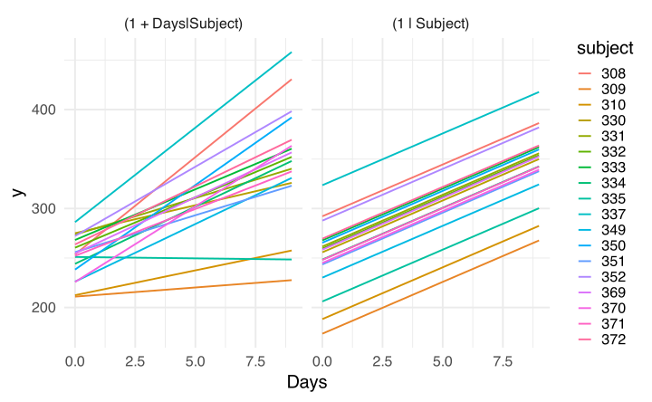
Vediamo adesso che oltre all’intercetta, anche la pendenza adesso è soggetto-specifica. Questo si vede chiaramente estraendo i coefficienti:
# intercette random
coef(fit_days)$Subject
(Intercept) Days
308 292 10.5
309 174 10.5
310 188 10.5
330 256 10.5
331 262 10.5
332 260 10.5
333 268 10.5
334 248 10.5
335 206 10.5
337 324 10.5
349 230 10.5
350 266 10.5
351 244 10.5
352 288 10.5
369 258 10.5
370 245 10.5
371 248 10.5
372 270 10.5
attr(,"class")
[1] "coef.mer"
# intercette e slope random
coef(fit_days_slopes)$Subject
(Intercept) Days
308 254 19.666
309 211 1.848
310 212 5.018
330 275 5.653
331 274 7.397
332 260 10.195
333 268 10.244
334 244 11.542
335 251 -0.285
337 286 19.096
349 226 11.641
350 238 17.082
351 256 7.452
352 272 14.003
369 255 11.340
370 226 15.290
371 252 9.479
372 264 11.751
attr(,"class")
[1] "coef.mer"
L’altra differenza importante riguarda sempre gli errori standard. Nel modello che ignora le random slope, la precisione nella stima di \(\beta_1\) è molto più elevata (artificiosamente):
car::compareCoefs(fit_days, fit_days_slopes)Calls:
1: lmer(formula = Reaction ~ 1 + Days + (1 | Subject), data = dat)
2: lmer(formula = Reaction ~ 1 + Days + (1 + Days | Subject), data = dat)
Model 1 Model 2
(Intercept) 251.41 251.41
SE 9.75 6.82
Days 10.467 10.467
SE 0.804 1.546
Un ultimo termine che compare nei parametri random stimati è la correlazione:
Random effects:
Groups Name Variance Std.Dev. Corr
Subject (Intercept) 612.1 24.74
Days 35.1 5.92 0.07
Residual 654.9 25.59 Quel termine rappresenta la correlazione stimata tra intercette e slope random. Con le formule sarà più chiaro ma in termini interpretativi rappresenta la tendenza di soggetti con tempi di reazione medi maggiori ad avere anche un effetto di Days maggiore (nel caso di correlazione positiva oppure l’inverso). In questo caso sembra che intercette e slope non siano correlate.
La parte random può essere complicata da stimare a volte e quindi è possibile porre dei vincoli. Nel nostro caso possiamo fissare la correlazione a zero (ovvero non farla stimare al modello):
fit_days_slopes_0 <- lmer(Reaction ~ 1 + Days + (1 + Days || Subject), data = dat)
summary(fit_days_slopes_0, cor = FALSE)Linear mixed model fit by REML. t-tests use Satterthwaite's method [
lmerModLmerTest]
Formula: Reaction ~ 1 + Days + (1 + Days || Subject)
Data: dat
REML criterion at convergence: 1744
Scaled residuals:
Min 1Q Median 3Q Max
-3.963 -0.463 0.020 0.465 5.186
Random effects:
Groups Name Variance Std.Dev.
Subject (Intercept) 627.6 25.05
Subject.1 Days 35.9 5.99
Residual 653.6 25.57
Number of obs: 180, groups: Subject, 18
Fixed effects:
Estimate Std. Error df t value Pr(>|t|)
(Intercept) 251.41 6.89 18.16 36.51 < 2e-16 ***
Days 10.47 1.56 18.16 6.71 2.6e-06 ***
---
Signif. codes: 0 '***' 0.001 '**' 0.01 '*' 0.05 '.' 0.1 ' ' 1
Dato che viene stimata praticamente a zero, fissarla a priori non fa cambiare molto. Possiamo anche formalmente comparare i modelli usando un likelihood-ratio test con la funzione anova():
anova(fit_days, fit_days_slopes_0, fit_days_slopes)Data: dat
Models:
fit_days: Reaction ~ 1 + Days + (1 | Subject)
fit_days_slopes_0: Reaction ~ 1 + Days + (1 + Days || Subject)
fit_days_slopes: Reaction ~ 1 + Days + (1 + Days | Subject)
npar AIC BIC logLik -2*log(L) Chisq Df Pr(>Chisq)
fit_days 4 1802 1815 -897 1794
fit_days_slopes_0 5 1762 1778 -876 1752 42.08 1 8.8e-11 ***
fit_days_slopes 6 1764 1783 -876 1752 0.06 1 0.8
---
Signif. codes: 0 '***' 0.001 '**' 0.01 '*' 0.05 '.' 0.1 ' ' 1
Il primo confronto valuta se l’aggiunta della random slope per Days migliora il modello rispetto al modello con sola intercetta random. Il secondo confronto valuta se, una volta inclusa la random slope, sia utile stimare anche la correlazione tra intercetta e slope random. In questo caso i modelli hanno la stessa parte fissa e differiscono solo nella struttura random.
Essendo la correlazione praticamente a zero, il confronto tra modelli ci dice che il modello migliore è quello che include le random slope ma esclude la correlazione tra intercette e slope.
Vediamo adesso formalmente il modello:
\[ y_{ij} = \beta_0 + u_{0i} + (\beta_1 + u_{1i})\text{Days}_{ij} + \varepsilon_{ij} \]
\[ \begin{bmatrix} u_{0i} \\ u_{1i} \end{bmatrix} \sim \mathcal{N}\left(\mathbf{0}, \Sigma\right) \]
\[ \Sigma = \begin{bmatrix} \sigma^2_{u0} & \rho \sigma_{u0} \sigma_{u1} \\ \rho \sigma_{u0} \sigma_{u1} & \sigma^2_{u1} \end{bmatrix} \]
Quindi le intercette e slope random vengono da una distribuzione normale multivariata con matrice di varianza-covarianza \(\Sigma\).
Distribuzione normale multivariata
NoteDistribuzione normale multivariata
Se non siete familiari con le distribuzioni normali multivariate e matrici di varianza-covarianza facciamo un piccolo approfondimento. La distribuzione normale è definita per media \(\mu\) e varianza \(\sigma^2\) ed è una distribuzione univariata.
# normale con media 0 e sd 1
x <- rnorm(10, mean = 0, sd = 1)
x [1] 1.9214 -0.9072 0.4312 -0.6406 -1.0278 0.0121 -0.7158 -0.5999 -0.9782
[10] 1.2342
Ora se utilizzo due distribuzioni normali con le rispettive medie e varianze sto, implicitamente, dicendo che le due normali sono indipendenti ovvero che la loro correlazione è zero.
y <- rnorm(10, mean = 5, sd = 2)
y [1] 4.7559 7.7037 3.6658 5.1995 4.8713 5.3388 3.1777 -0.0481 3.4450
[10] 7.1534
cor(x, y)[1] 0.221
Tuttavia potrei voler inserire una correlazione tra le due distribuzioni e quindi mettere oltre alle due medie e varianze anche la correlazione. Per questo caso possiamo definire una matrice di varianza covarianza \(\Sigma\) che descrive le varianze delle due (o più) distribuzioni normali e le loro correlazioni.
\[ \Sigma = \begin{bmatrix} \sigma_x^2 & \rho \sigma_x \sigma_y \\ \rho \sigma_x \sigma_y & \sigma_y^2 \end{bmatrix} \]
Dove \(\rho\) è la correlazione e quindi \(\rho \sigma_x \sigma_y\) è la covarianza.
# deviazione standard di x e y
s <- c(1, 2)
# correlazione ipotetica
r <- 0.5
# matrice di correlazione
R <- r + diag(1 - r, 2)
R [,1] [,2]
[1,] 1.0 0.5
[2,] 0.5 1.0
# matrice di varianza-covarianza
S <- diag(s) %*% R %*% diag(s)
S [,1] [,2]
[1,] 1 1
[2,] 1 4
Ora possiamo generare dati non con rnorm ma con MASS::mvrnorm() che gestisce il caso multivariato. L’unico ingrediente che manca sono le medie. Nel nostro caso, ogni normale ha la sua media che possiamo descrivere in modo compatto con un vettore.
\[ \mathbf{y} \sim \mathcal{N} \left( \begin{bmatrix} \mu_1 \\ \mu_2 \end{bmatrix}, \Sigma \right) \]
Quindi:
# vettore di medie
mu <- c(0, 0)
# così generiamo due distribuzioni normali correlate
MASS::mvrnorm(10, mu = mu, Sigma = S) [,1] [,2]
[1,] 0.6303 -2.881
[2,] 0.6385 -0.744
[3,] -0.1760 1.331
[4,] -0.1235 -2.102
[5,] 1.3651 0.841
[6,] 0.6655 0.533
[7,] -0.5618 -5.486
[8,] 0.0393 -1.323
[9,] 0.1290 0.568
[10,] 1.0452 2.921
Quindi tramite la formula della parte random possiamo rendere più o meno complessa la distribuzione normale multivariata che descrive gli effetti random. Ad esempio, facendo (1|Subject) stiamo sostanzialmente facendo:
\[ \Sigma = \begin{bmatrix} \sigma^2_{u0} \end{bmatrix} \]
Ovvero una singola distribuzione normale. Mentre (Days||Subject) stiamo imponendo gli elementi off-diagonal (fuori diagonale) ad essere zero:
\[ \Sigma = \begin{bmatrix} \sigma^2_{u0} & 0 \\ 0 & \sigma^2_{u1} \end{bmatrix} \]
Intervalli di confidenza e visualizzazione
Ora vediamo qualche modo di avere informazioni aggiuntive rispetto al modello stimato che vadano oltre quello che summary() riporta.
Possiamo estrarre gli intervalli di confidenza con il comando confint(). La prima opzione è chiamata Wald confidence intervals. Questi non sono altro che dei semplici intervalli di confidenza basati sull’approssimazione normale della distribuzione campionaria. In formula questo equivale a:
\[ 95\% CI = \hat \beta \pm q \text{SE}_{\beta} \]
Dove \(q\) è il quantile critico al livello \(\alpha\) per la distribuzione campionaria che si assume. Ad esempio, per la distribuzione normale con \(\alpha = 0.05\) il quantile critico è \(q \approx 1.96\).
# con la funzione
confint(fit_days_slopes, method = "Wald", level = 0.95) 2.5 % 97.5 %
.sig01 NA NA
.sig02 NA NA
.sig03 NA NA
.sigma NA NA
(Intercept) 238.03 264.8
Days 7.44 13.5
# manualmente
(q <- abs(qnorm(0.05/2)))[1] 1.96
# estraggo gli standard error
b <- fixef(fit_days_slopes)
se <- summary(fit_days_slopes)$coefficients[, "Std. Error"]
# lower
b - q * se(Intercept) Days
238.03 7.44
# upper
b + q * se(Intercept) Days
264.8 13.5
L’altra opzione che è anche il default riguarda l’utilizzo dei profile likelihoodd confidence intervals. Questo tipo di intervalli sono basati sulla likelihood profilo dei parametri dei parametri:
# estraggo prima le likelihood perché ci mette molto, altrimenti direttamente con
# confint(fit)
pf <- profile(fit_days_slopes)
confint(pf, method = "profile", level = 0.95) 2.5 % 97.5 %
.sig01 14.381 37.716
.sig02 -0.482 0.685
.sig03 3.801 8.753
.sigma 22.898 28.858
(Intercept) 237.681 265.130
Days 7.359 13.576
Questo è il grafico delle profile likelihood per ogni parametro. L’intervallo di confidenza in questo caso si calcola direttamente sulla profile likelihoodd e potrebbe essere diverso dalla versione Wald oltre a non essere necessariamente simmetrico.
lattice::densityplot(pf)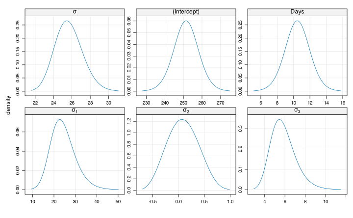
Vediamo adesso come rappresentare graficamente gli effetti random:
lattice::dotplot(ranef(fit_days_slopes))$Subject
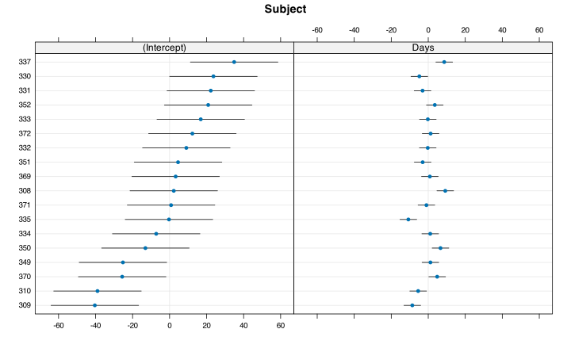
Questi grafici sono molto utili per avere un’idea più concreta, ad interpretare le varianze stimate, rispetto a quanto variano i parametri tra soggetti. Ad esempio mentre è chiaro che l’intercetta è molto diversa tra soggetti, la slope seppure con alcune differenze sembrerebbe essere più simile (a parte alcuni soggetti).
Ora vediamo come rappresentare graficamente ed in formato tabella il nostro modello. Per gli effetti fissi possiamo usare il pacchetto ggeffects:
library(ggeffects)
ggeffect(fit_days_slopes)$Days
# Predicted values of Reaction
Days | Predicted | 95% CI
---------------------------------
0 | 251.41 | 237.94, 264.87
1 | 261.87 | 248.48, 275.27
2 | 272.34 | 258.34, 286.34
3 | 282.81 | 267.60, 298.01
5 | 303.74 | 284.83, 322.65
6 | 314.21 | 293.03, 335.39
7 | 324.68 | 301.05, 348.30
9 | 345.61 | 316.74, 374.48
attr(,"class")
[1] "ggalleffects" "list"
attr(,"model.name")
[1] "fit_days_slopes"
# restituisce un oggetto ggplot che si può customizzare
# ulteriormente con + ...
plot(ggeffect(fit_days_slopes))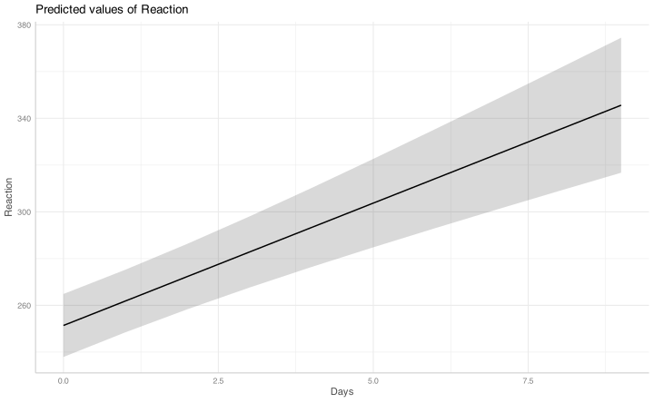
In questo caso stiamo plottando l’effetto fisso di Days ed il suo intervallo di confidenza in un modello che però tiene conto delle differenze tra soggetti sia nella baseline che nell’effetto della deprivazione.
Vediamo adesso nel modello completo l’effetto dello shrinkage per entrambi i parametri stimati. Il centro del grafico è la stima di lme4 mentre i punti sono le stime con lm una per soggetto e le stime di lme4 ricostruite unendo effetti random e fissi:
fitl <- lmList(Reaction ~ Days | Subject, data = dat)
res_no_pool <- coef(fitl)
res_p_pool <- data.frame(coef(fit_days_slopes)$Subject)
names(res_no_pool) <- c("b0", "b1")
names(res_p_pool) <- c("b0", "b1")
res_no_pool$subject <- rownames(res_no_pool)
res_p_pool$subject <- rownames(res_p_pool)
res_no_pool$model <- "lm"
res_p_pool$model <- "lmer"
res <- rbind(res_no_pool, res_p_pool)
ggplot(res, aes(x = b0, y = b1)) +
geom_line(aes(group = subject)) +
geom_point(x = fixef(fit_days_slopes)[1], y = fixef(fit_days_slopes)[2], size = 10) +
geom_point(aes(color = model), size = 3)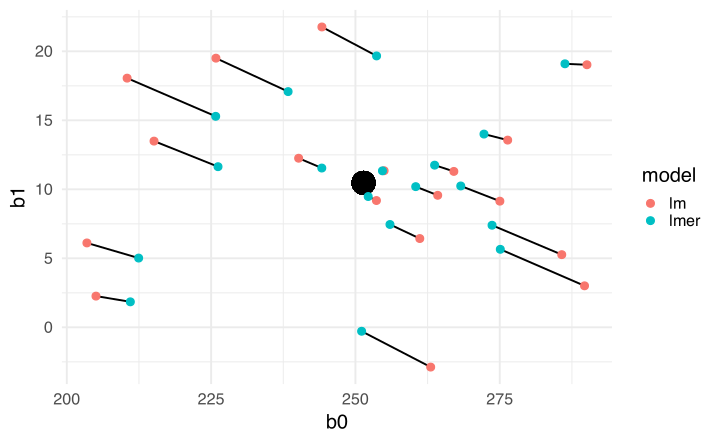
Come avevamo già visto, le stime di ogni soggetto vengono trascinate verso il centro di gravità ovvero i parametri stimati con lme4.
Interpretazione e diagnostica
Prima di passare a modelli più complessi vorrei fare un cenno rispetto all’interpretazione di effetti fissi e random. Se ci concentriamo sull’effetto Days, quindi \(\beta_1\) lo interpretiamo come l’aumento dei tempi di reazione per ogni giorno che passa di deprivazione da sonno.
Ora un punto importante riguarda la distinzione tra \(\beta_1\) stimato con lm e \(\beta_1\) stimato con lme4. Nel modello lineare classico noi stimiamo \(\beta_1\) inteso come un valore fisso che, in base al numero di osservazioni, verrà stimato con più o meno precisione. L’unica fonte di variabilità è \(\varepsilon\) che, idealmente, si può ridurre semplicemente aumentando la numerosità campionaria. Ogni soggetto ha lo stesso effetto di Days.
Nel caso di lme4, \(\beta_1\) è l’effetto medio di una distribuzione di effetti veri. Essendo la distribuzione assunta come normale possiamo anche visualizzarla:
b <- fixef(fit_days_slopes)
vv <- insight::get_variance(fit_days_slopes)
sd_slope <- sqrt(vv$var.slope)
ggplot() +
stat_function(
fun = dnorm,
args = list(mean = b["Days"], sd = sd_slope)
) +
geom_vline(
xintercept = b["Days"],
linetype = "dashed"
) +
xlim(
b["Days"] - 4 * sd_slope,
b["Days"] + 4 * sd_slope
) +
labs(
x = "Slope soggetto-specifico per Days",
y = "Densità")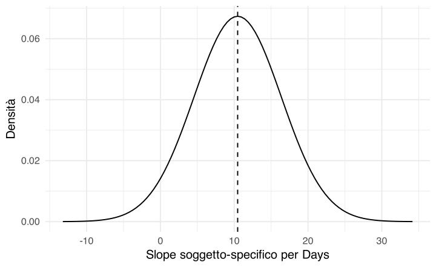
Quindi, la media dell’effetto vero di Days è \(\beta_1\) (stimato con lme4) ma alcuni soggetti hanno \(\beta_1 = 0\) mentre altri \(\beta_1 = 20\). Questa è una distinzione importante ma sottile, nel caso di modelli multilivello gli effetti fissi sono la media di effetti veri la cui distribuzione (in particolare la deviazione standard) viene stimata.
Per la diagnostica valgono sostanzialmente gli stessi assunti del modello lineare classico e possiamo verificarli (graficamente) allo stesso modo. Il pacchetto performance ha diverse funzioni per la diagnostica dei modelli, tra cui anche lme4:
performance::check_model(fit_days_slopes)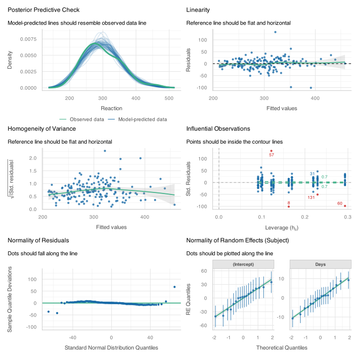
L’unica differenza importante può essere riguardo alla diagnostica di outlier e punti influenti. Infatti, mentre nel modello lm la singola osservazione (riga del dataset) veniva valutata, nel modello lmer abbiamo cluster di osservazioni. Possiamo usare il pacchetto influence.ME che calcola le comuni diagnostiche per outlier e punti influenti ma a livello del cluster. L’unica accortezza riguarda l’aspetto computazionale perché è necessario fittare il modello togliendo un cluster/soggetto per volta.
library(influence.ME)
infl <- influence(fit_days_slopes, group = "Subject")
head(cooks.distance(infl)) [,1]
308 0.10078
309 0.18781
310 0.12612
330 0.08900
331 0.05649
332 0.00569
head(dfbetas.estex(infl)) (Intercept) Days
308 -0.0587 0.4489
309 -0.4109 -0.3099
310 -0.4276 -0.1583
330 0.3295 -0.2791
331 0.2921 -0.1904
332 0.1050 -0.0323
plot(infl, which = "cook", sort = TRUE)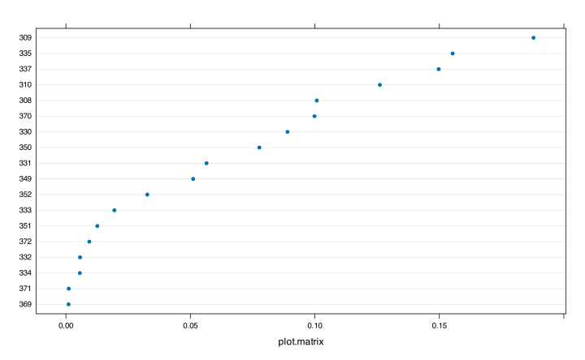
plot(infl, which = "dfbetas")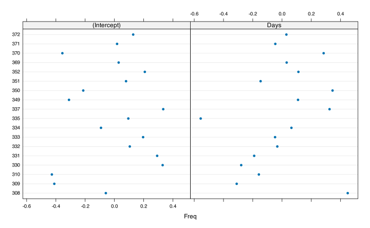